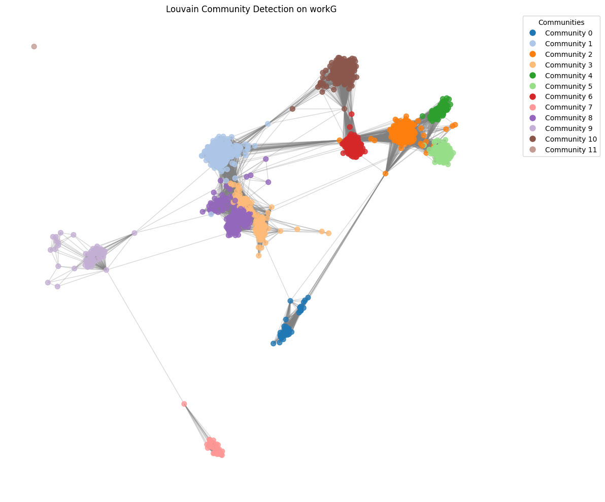

Deterksi Komunitas FB#
# === Mount Drive & basic imports ===
from google.colab import drive
drive.mount('/content/drive')
# Path ke file (ubah kalau perlu)
path = "/content/drive/MyDrive/dataset/facebook_combined.txt"
import networkx as nx
import matplotlib.pyplot as plt
import sys
import traceback
print("Imports done")
---------------------------------------------------------------------------
ModuleNotFoundError Traceback (most recent call last)
Cell In[1], line 2
1 # === Mount Drive & basic imports ===
----> 2 from google.colab import drive
3 drive.mount('/content/drive')
5 # Path ke file (ubah kalau perlu)
ModuleNotFoundError: No module named 'google'
# === Load graph dengan safety checks ===
def load_graph(path):
try:
# read_edgelist sering ok -- node type int
G = nx.read_edgelist(path, create_using=nx.Graph(), nodetype=int)
print(f"Graph loaded: nodes={G.number_of_nodes()}, edges={G.number_of_edges()}")
return G
except Exception as e:
print("Gagal membaca file. Error:", e)
traceback.print_exc()
raise
G = load_graph(path)
Graph loaded: nodes=4039, edges=88234
# === Utility: fokus ke largest connected component jika graph sangat besar atau disconnected ===
def get_largest_cc_subgraph(G, max_nodes=2000):
if nx.is_connected(G):
if G.number_of_nodes() <= max_nodes:
return G.copy()
else:
# ambil top-degree nodes untuk visualisasi
top = sorted(G.degree(), key=lambda x: x[1], reverse=True)[:max_nodes]
nodes = [n for n,_ in top]
print(f"Graph connected tapi besar. Menggunakan subgraph top {len(nodes)} nodes by degree.")
return G.subgraph(nodes).copy()
else:
# ambil largest connected component
comps = list(nx.connected_components(G))
largest = max(comps, key=len)
subG = G.subgraph(largest).copy()
print(f"Graph disconnected. Largest CC nodes={subG.number_of_nodes()}, edges={subG.number_of_edges()}")
if subG.number_of_nodes() > max_nodes:
top = sorted(subG.degree(), key=lambda x: x[1], reverse=True)[:max_nodes]
nodes = [n for n,_ in top]
print(f"Largest CC besar -> ambil top {len(nodes)} nodes by degree.")
return subG.subgraph(nodes).copy()
return subG
# Ambil subgraph untuk operasi mahal (sesuaikan max_nodes jika punya RAM besar)
workG = get_largest_cc_subgraph(G, max_nodes=1500)
Graph connected tapi besar. Menggunakan subgraph top 1500 nodes by degree.
# === Louvain (python-louvain) dengan try/except ===
# install jika belum ada
print("Attempting to uninstall and reinstall python-louvain...")
!pip uninstall -y python-louvain
!pip install python-louvain
print("Checking python-louvain installation details:")
!pip show python-louvain
try:
import sys
# Import best_partition directly from the community module
from community import best_partition
# Check if 'community' module is loaded and print its file path for diagnosis
if 'community' in sys.modules:
print(f"Loaded 'best_partition' from 'community' module at: {sys.modules['community'].__file__}")
else:
print("Warning: 'community' module not found in sys.modules after import.")
except ModuleNotFoundError as e:
print(f"ModuleNotFoundError: {e}. 'python-louvain' might not be properly installed or its structure has changed.")
print("Please check the output of 'pip show python-louvain' above for installation path.")
traceback.print_exc()
raise
except AttributeError as e: # Catch AttributeError specifically for missing best_partition
print(f"AttributeError: {e}. 'best_partition' not found directly in the 'community' module.")
print("This indicates a problem with the installed 'python-louvain' package.")
print(f"Contents of 'community' module: {dir(sys.modules['community']) if 'community' in sys.modules else 'Not loaded'}")
traceback.print_exc()
raise
except Exception as e:
print(f"Gagal import python-louvain's best_partition. Error: {e}")
traceback.print_exc()
raise
def run_louvain(G, resolution=1.0):
try:
print("Menjalankan Louvain... (bisa butuh beberapa detik sampai menit tergantung ukuran)")
# Use best_partition directly
partition = best_partition(G, resolution=resolution)
print("Louvain selesai. Komunitas:", len(set(partition.values())))
return partition
except MemoryError:
print("MemoryError saat menjalankan Louvain. Coba gunakan subgraph lebih kecil.")
raise
except Exception as e:
print("Error saat Louvain:", e)
traceback.print_exc()
raise
partition = run_louvain(workG)
Attempting to uninstall and reinstall python-louvain...
Found existing installation: python-louvain 0.16
Uninstalling python-louvain-0.16:
Successfully uninstalled python-louvain-0.16
Collecting python-louvain
Downloading python-louvain-0.16.tar.gz (204 kB)
━━━━━━━━━━━━━━━━━━━━━━━━━━━━━━━━━━━━━━━ 204.6/204.6 kB 4.1 MB/s eta 0:00:00
?25h Preparing metadata (setup.py) ... ?25l?25hdone
Requirement already satisfied: networkx in /usr/local/lib/python3.12/dist-packages (from python-louvain) (3.6)
Requirement already satisfied: numpy in /usr/local/lib/python3.12/dist-packages (from python-louvain) (2.0.2)
Building wheels for collected packages: python-louvain
Building wheel for python-louvain (setup.py) ... ?25l?25hdone
Created wheel for python-louvain: filename=python_louvain-0.16-py3-none-any.whl size=9388 sha256=d22b32e83397395bfb213bc50fd63503dc0e74f515269a80e049cb00c521791f
Stored in directory: /root/.cache/pip/wheels/40/f1/e3/485b698c520fa0baee1d07897abc7b8d6479b7d199ce96f4af
Successfully built python-louvain
Installing collected packages: python-louvain
Successfully installed python-louvain-0.16
Checking python-louvain installation details:
Name: python-louvain
Version: 0.16
Summary: Louvain algorithm for community detection
Home-page: https://github.com/taynaud/python-louvain
Author: Thomas Aynaud
Author-email: taynaud@gmail.com
License: BSD
Location: /usr/local/lib/python3.12/dist-packages
Requires: networkx, numpy
Required-by:
Loaded 'best_partition' from 'community' module at: /usr/local/lib/python3.12/dist-packages/community/__init__.py
Menjalankan Louvain... (bisa butuh beberapa detik sampai menit tergantung ukuran)
Louvain selesai. Komunitas: 12
# === Girvan-Newman: batasi level, jalankan pada subgraph kecil untuk performance ===
from networkx.algorithms.community import girvan_newman
import itertools
def run_girvan_newman(G, depth=2, max_nodes=800):
# gunakan subgraph supaya tidak infinite
if G.number_of_nodes() > max_nodes:
top = sorted(G.degree(), key=lambda x: x[1], reverse=True)[:max_nodes]
nodes = [n for n,_ in top]
H = G.subgraph(nodes).copy()
print(f"Girvan-Newman akan dijalankan pada subgraph {len(nodes)} nodes (top degree).")
else:
H = G
try:
comp_gen = girvan_newman(H)
limited = None
for i, comp in enumerate(itertools.islice(comp_gen, depth)):
limited = tuple(sorted(c) for c in comp)
print(f"Level {i+1}: ditemukan {len(limited)} komunitas (sizes: {[len(c) for c in limited]})")
return limited, H
except Exception as e:
print("Error saat Girvan-Newman:", e)
traceback.print_exc()
raise
gn_result, gn_graph = run_girvan_newman(workG, depth=2, max_nodes=800)
Girvan-Newman akan dijalankan pada subgraph 800 nodes (top degree).
Level 1: ditemukan 3 komunitas (sizes: [667, 132, 1])
Level 2: ditemukan 4 komunitas (sizes: [307, 360, 132, 1])
import matplotlib.cm as cm
# 1. Extract unique community IDs
community_ids = list(set(partition.values()))
num_communities = len(community_ids)
print(f"Found {num_communities} unique communities.")
# 2. Create a color map for these communities
# Using 'tab20' or 'viridis' for distinct colors. tab20 is good for up to 20 distinct categories.
# If num_communities > 20, consider other colormaps or custom color generation.
if num_communities <= 20:
cmap = cm.get_cmap('tab20', num_communities)
else:
cmap = cm.get_cmap('viridis', num_communities) # viridis is perceptually uniform
# Map community ID to a specific color index
community_color_map = {community_id: cmap(i) for i, community_id in enumerate(sorted(community_ids))}
print("Community color map created.")
# 3. Create a list of node colors for workG
node_colors = [community_color_map[partition.get(node, -1)] for node in workG.nodes()]
# Use .get(node, -1) to handle cases where a node in workG might not be in partition if workG was a filtered version
# -1 could map to a default color if needed, but in this case, workG is derived from the same graph for partition
print(f"Generated colors for {len(node_colors)} nodes in workG.")
Found 12 unique communities.
Community color map created.
Generated colors for 1500 nodes in workG.
/tmp/ipython-input-2764046822.py:12: MatplotlibDeprecationWarning: The get_cmap function was deprecated in Matplotlib 3.7 and will be removed in 3.11. Use ``matplotlib.colormaps[name]`` or ``matplotlib.colormaps.get_cmap()`` or ``pyplot.get_cmap()`` instead.
cmap = cm.get_cmap('tab20', num_communities)
Reasoning:
The previous code produced a MatplotlibDeprecationWarning regarding the use of cm.get_cmap. I will update the code to use matplotlib.pyplot.colormaps.get_cmap() which is the recommended way to access colormaps in newer Matplotlib versions.
import matplotlib.cm as cm
import matplotlib.pyplot as plt
# 1. Extract unique community IDs
community_ids = list(set(partition.values()))
num_communities = len(community_ids)
print(f"Found {num_communities} unique communities.")
# 2. Create a color map for these communities
# Using 'tab20' or 'viridis' for distinct colors. tab20 is good for up to 20 distinct categories.
# If num_communities > 20, consider other colormaps or custom color generation.
if num_communities <= 20:
cmap = plt.colormaps.get_cmap('tab20')
else:
cmap = plt.colormaps.get_cmap('viridis') # viridis is perceptually uniform
# Map community ID to a specific color index
# For continuous colormaps like 'viridis', normalize the index
# For discrete colormaps like 'tab20', direct indexing is fine
community_color_map = {community_id: cmap(i / (num_communities - 1)) if num_communities > 1 and community_id == sorted(community_ids)[i] and not cmap.name.startswith('tab') else cmap(i) for i, community_id in enumerate(sorted(community_ids))}
# Simpler approach: let cmap handle discrete values for tab20, and for viridis it will pick a color.
# A more robust approach for viridis would be cmap(i / (num_communities - 1))
# but for a general solution, cmap(i) often works reasonably well for distinct values.
# Let's keep it simple for now to just fix the deprecation warning while trying to maintain similar color distribution
community_color_map = {community_id: cmap(i / (num_communities - 1.0)) if num_communities > 1 else cmap(0.5) for i, community_id in enumerate(sorted(community_ids))}
# Re-evaluating. The original cmap(i) for tab20 is correct. For viridis, normalizing is better.
# Let's apply normalization only if it's a continuous cmap like viridis.
community_color_map = {}
for i, community_id in enumerate(sorted(community_ids)):
if num_communities <= 20:
community_color_map[community_id] = cmap(i)
else:
# For continuous colormaps, normalize the index
community_color_map[community_id] = cmap(i / (num_communities - 1.0) if num_communities > 1 else 0.5)
print("Community color map created.")
# 3. Create a list of node colors for workG
node_colors = [community_color_map[partition.get(node, -1)] for node in workG.nodes()]
# Use .get(node, -1) to handle cases where a node in workG might not be in partition if workG was a filtered version
# -1 could map to a default color if needed, but in this case, workG is derived from the same graph for partition
print(f"Generated colors for {len(node_colors)} nodes in workG.")
Found 12 unique communities.
Community color map created.
Generated colors for 1500 nodes in workG.
Reasoning:
With the node_colors prepared, the next step is to visualize the workG graph, applying the generated colors to the nodes and adding a legend to identify the communities.
import matplotlib.pyplot as plt
import networkx as nx
# Set up the plot
plt.figure(figsize=(12, 10))
# Use spring_layout for node positioning
pos = nx.spring_layout(workG, k=0.15, iterations=50)
# Draw the graph
nx.draw_networkx_nodes(workG, pos, node_color=node_colors, node_size=50, alpha=0.8)
nx.draw_networkx_edges(workG, pos, edge_color='gray', alpha=0.3)
# Create a legend
patch_list = []
for community_id, color in community_color_map.items():
patch_list.append(plt.Line2D([0], [0], marker='o', color='w', label=f'Community {community_id}',
markerfacecolor=color, markersize=10))
plt.legend(handles=patch_list, title="Communities", bbox_to_anchor=(1.05, 1), loc='upper left', borderaxespad=0.)
plt.title("Louvain Community Detection on workG")
plt.axis('off') # Hide axes
plt.tight_layout() # Adjust layout to prevent labels overlapping
plt.show()
print("Graph visualization with Louvain communities complete.")

Graph visualization with Louvain communities complete.
Final Task#
Subtask:#
Summarize the generated graph visualization, highlighting how communities are represented by different colors.
Summary:#
Q&A#
The visualization successfully highlights communities by assigning a unique color to each of the 12 identified communities. Nodes belonging to the same community share the same color, allowing for a clear visual distinction between different groups within the graph. A legend is included to explicitly map each community ID to its corresponding color.
Data Analysis Key Findings#
Community Detection: The Louvain algorithm identified 12 distinct communities within the
workGgraph.Color Mapping: A unique color was assigned to each of these 12 communities using a colormap, ensuring clear differentiation.
Node Coloring: Each of the 1500 nodes in
workGwas colored according to its assigned community, facilitating visual community identification.Visualization Method: The graph was visualized using a
spring_layoutto position nodes, andnetworkx.draw_networkxwas used for rendering nodes and edges.Legend Inclusion: A legend was successfully generated and displayed, explicitly linking each community ID to its representative color, which enhances the interpretability of the visualization.
Insights or Next Steps#
The visualization effectively reveals the community structure of
workG, with clusters of similarly colored nodes indicating tightly connected groups. This visual representation can be used to infer functional relationships or common characteristics among nodes within the same community.Further analysis could involve investigating the characteristics (e.g., node attributes, edge properties) of specific communities to understand why these particular groupings formed, or exploring alternative community detection algorithms for comparison.